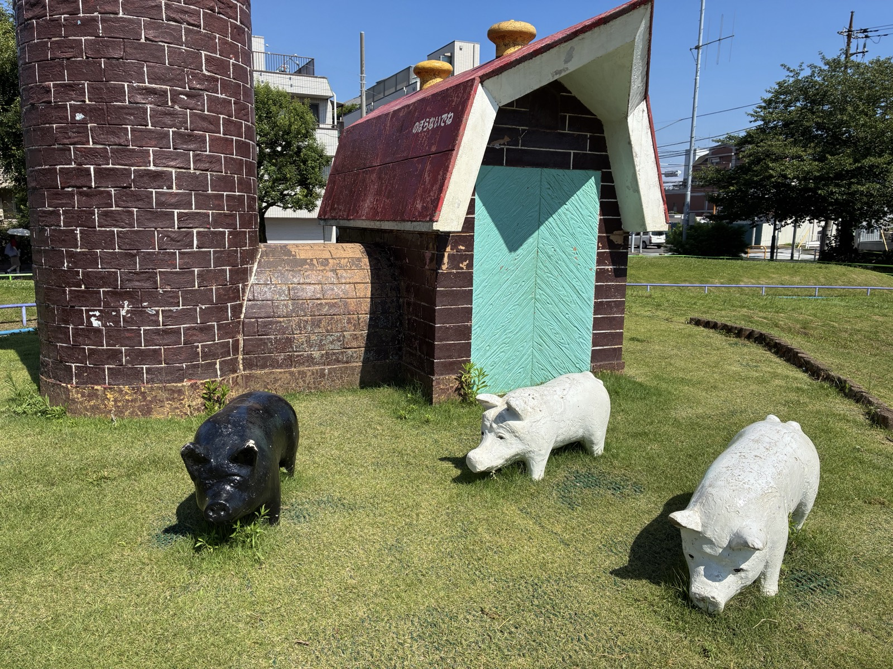
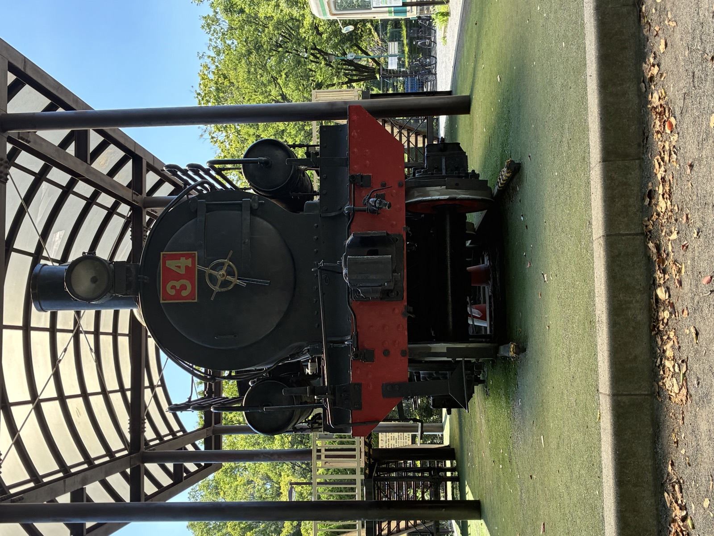
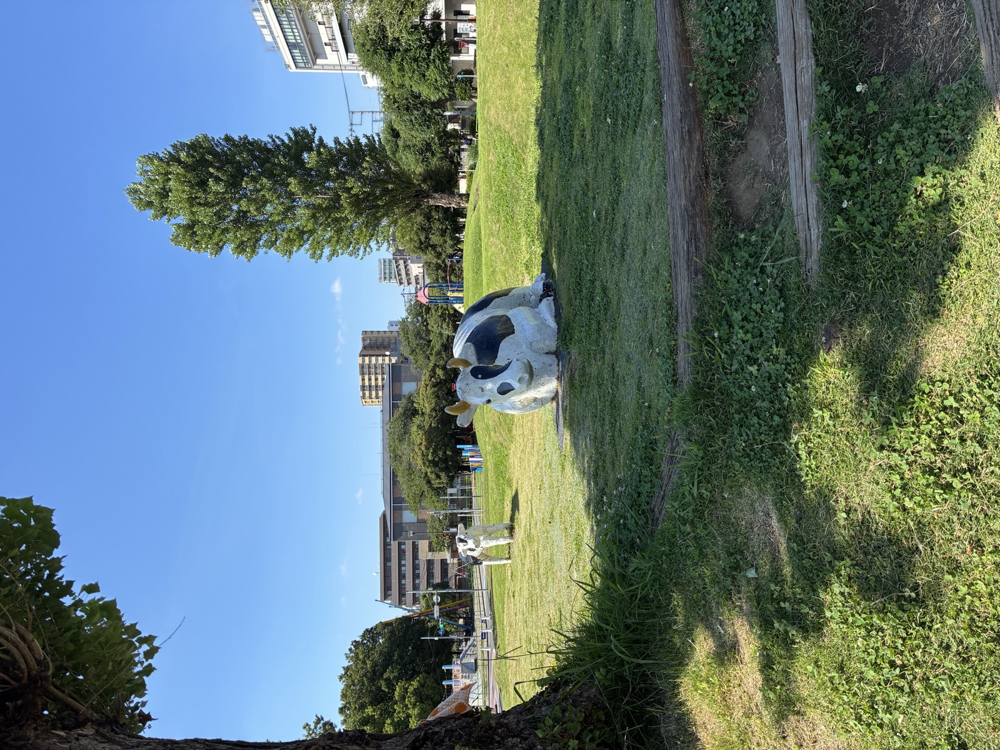
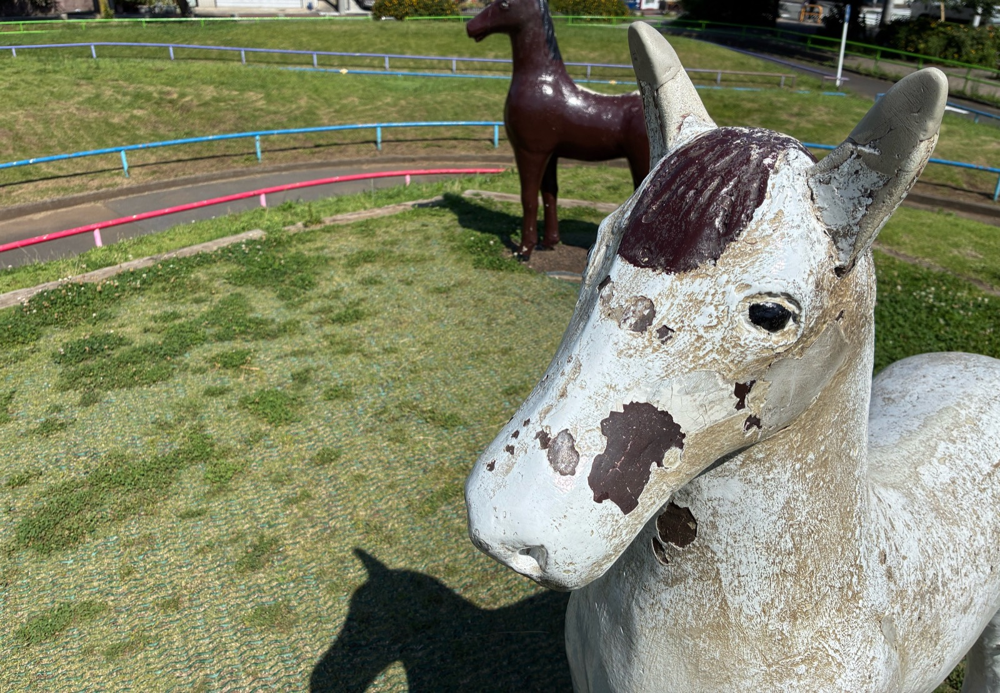
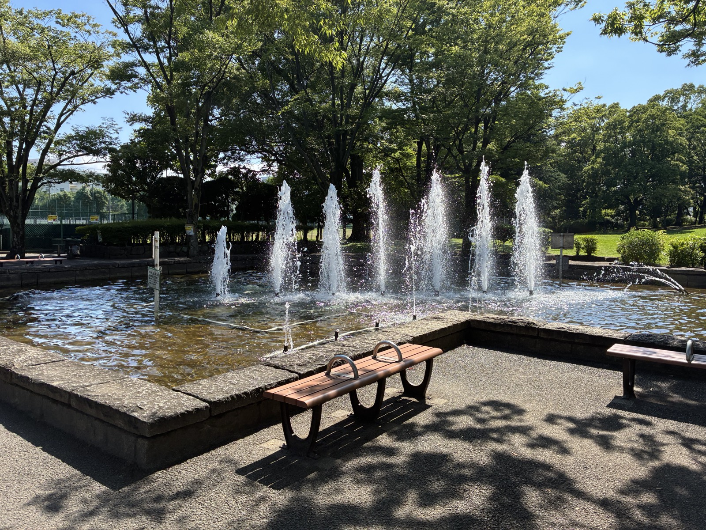

GeoMemory（ジオメモリー）は、あなたが実際に走った・歩いた道を「覚えて」、あとから地図の上で再生できるアプリです。車でも、自転車でも、徒歩でも。覚えた道はあなたのiPhoneの中に大切に保存されます。
移動を始めると、通った道が地図に紫の線で描かれていきます。画面は見なくて大丈夫。ポケットに入れたままでも覚えます。
その道は「覚えた道」に自動で保存されます。地名も自動で付くので、あとから見て分かります。
スタートからゴールまで、地図の上をもう一度たどります。速さは1倍・2倍・4倍から選べます。「あの道どこだったかな」が一目で蘇ります。
拡大（＋）・縮小（−）・3D傾き・向きの切り替え——すべて画面のボタンを押すだけで操作できます。むずかしいジェスチャー（指2本でひねる等）を覚える必要はありません。もちろん使える方はジェスチャーでも操作できます。
目的地の決め方は3つ。①名前で検索、②地図のお店や場所をタップ、③地図をなでて照準を合わせる「探索」。運転手さんとお客さん、二人で画面を覗き込みながら決められる作りです。
案内が始まると、青い線がルートを示し、曲がり角の手前で音声がお知らせします。ナビ中も道の記録は同時にできます——案内の青線の上を、自分の紫線が塗っていく気持ちよさをぜひ。
自動3Dをオンにすると、直線では3Dで景色ゆたかに、曲がり角の手前ではゆっくり2Dに寝かせて交差点を見やすくします。カメラが自動で動いている間は、3D⇔2Dボタンが水色に点滅して「いま自動で動かしています」の合図を出します。
ルートを外れたときは、押しつけがましい自動リルートはせず、お知らせした上であなたのタップで再検索。道を選ぶのはいつも、道を知っているあなたです。
覚えた道の点をタップすると、その場所に絵文字つきのメモを残せます。ここからが本題。メモの中に書いたURL（ホームページの住所）は、自動で「タップで開ける青いリンク」になります。
GoogleドライブやiCloud共有アルバムなど、お使いの写真置き場でOKです。
写真やフォルダの共有メニューから、リンク（URL）をコピーします。
これで完成。あとからメモを開いてリンクをタップすれば、その場所で撮った写真がすぐ見られます。道の記憶と写真の記憶がひとつにつながります。

🍜 お店のホームページやメニューのリンクを貼れば「自分だけのグルメ地図」に。
🏥 病院・施設の案内ページを貼れば、送り迎えの道がそのまま便利帳に。
📝 リンクなしでも、「ここは夕方混む」「この角は見通しが悪い」など、道のコツの書き留めにどうぞ。プロの知恵はメモから生まれます。
GeoMemoryを持って歩くと、いつもの街が少し違って見えます。たとえばこの萩中公園（東京都大田区）には、こんな仲間たちが住んでいます。ぜんぶ覚えた道とメモで「自分の地図」に描き込めます。




🐾 「走行の足あと」をオンにすると、記録ボタンを押していなくても、通った道がうっすら残ります（約500km分・古い順に消えます）。一日の終わりに眺めれば、今日どこを通ったかの無言の日記。迷路のような路地でも、来た道が薄く光っているので帰り道に迷いません。
🚕 タクシー・配達のプロの方へ。「一度通ったお客様の道」を覚えて再生できるのは、次に同じ場所へ呼ばれたときの大きな武器です。運行管理（拘束時間・連続運転・休憩）の見張り機能もあります。
👨👩👧 ご家族で。おじいちゃんの散歩道、子どもと見つけた近道、旅先のレンタカーの道。覚えた道は、あとで一緒に再生しながら「ここ行ったね」と話せる思い出になります。
あなたのiPhoneの中に保存されます。会員登録は不要です。
いいえ。GeoMemoryは記録中、こまめに途中経過を退避しています。万一の強制終了でも、次の起動時に「そこまでの道」を救出して保存します。
ナビの自転車専用ルートは現在Appleの地図が日本で未対応のため、車・徒歩でのご案内になります。道の記録・再生・足あとは、自転車でも問題なく使えます。
GPSの電波状況によるもので、故障ではありません。開けた場所で少し移動すると自然に直ります。
右下の3D⇔2Dの丸ボタンを押すと、傾きスライダーで好きな角度に調整できます。設定した角度は次にアプリを開いたときも再現されます。